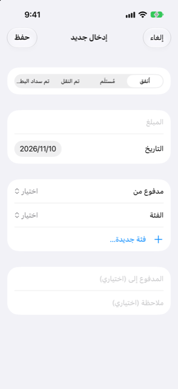

الدليل › تسجيل المال
املأ نموذجًا
سجّل مصروفًا أو دخلًا أو تحويلًا باستخدام النموذج.
النموذج يسجل شيئًا واحدًا حدث: مال أُنفق، أو مال مُستلَم، أو نقلة بين حساباتك أنت، أو فاتورة بطاقة سُددت من حساب بنكي. استخدمه عندما تريد التحقق من كل حقل بنفسك، أو لإكمال شيء قرأه Damla ولم يستطع إكماله بنفسه.

متى تستخدمه
- تريد أن تسجل شيئًا يدويًا، حقلًا حقلًا.
- قرأ Damla جملة أو رسالة لكن شيئًا ما كان ناقصًا: أكمله يفتح هذا النموذج مع ما فُهم مملوءًا سلفًا.
- عنصر من صندوق الوارد يحتاج إكمالًا.
- تريد أن تغيّر أو تصحح شيئًا سجلته سابقًا.
خطوة بخطوة
- انقر زر الزائد على شاشة اليوم أو النشاط.
- انقر املأ نموذجًا. تفتح شاشة إدخال جديد.
- في الأعلى، اختر النوع. الأنواع الأربعة هي أُنفق ومُستلَم وتم النقل وتم سداد البطاقة.
- اكتب المبلغ وحدد التاريخ.
- اختر الحسابات، وفئة للمصروف أو الدخل:
- أُنفق: اختر مدفوع من — حساب بنك أو مدخرات أو محفظة أو بطاقة — وفئة. - مُستلَم: اختر فئة والحساب الذي يذهب المال إلى. - تم النقل: اختر من وإلى. القائمة تضم حساباتك البنكية والمدخرات والمحفظة والأشخاص. لا يمكن أن يكونا الحساب نفسه. - تم سداد البطاقة: اختر مدفوع من — حساب بنك أو مدخرات أو محفظة — والبطاقة.
- لـ أُنفق أو مُستلَم يمكنك إضافة من دفعت له أو من دفع لك («المدفوع إلى (اختياري)» أو «من (اختياري)») وملاحظة.
- انقر حفظ.
إذا كان بعملة أخرى
لـ أُنفق أو مُستلَم، بعد اختيار الحساب، يعرض النموذج قسم مدفوع بعملة أخرى. إذا خصم التاجر بعملة غير عملة الحساب، اخترها تحت عملة الخصم واكتب المبلغ المخصوم. عندها يعرض Damla استخدم التقدير: … — المبلغ المحسوب من أحدث سعر صرف وهامش البنك (يُحدَّد في الإعدادات). رقم تكتبه بنفسك يحل محل التقدير. إذا لم يكن هناك سعر صرف لعملة تلك بعد، اكتب ما فُوّضت البطاقة به: إنه في كشف الحساب أو في تطبيق البنك.
لـ تم النقل بين حسابين بعملتين مختلفتين، يظهر قسم مُستلَم: اكتب المبلغ المُستلَم بعملة الحساب المستلم.
تغيير شيء سجلته
- افتح النشاط وانقر العملية. يفتح النموذج نفسه بعنوان تعديل الإدخال. (عملية مقسّمة سلفًا تفتح شاشة التقسيم بدلًا من ذلك.)
- غيّر ما تحتاج وانقر حفظ. لإزالتها، اسحب العملية في قائمة النشاط لحذفها.
بعد أن تحفظ عملية بفئة، يتذكر Damla أن المحل أو الشخص يتبع تلك الفئة، فالتنبيه القادم منه يُصنَّف في تلك الفئة تلقائيًا. إذا كانت عمليات سابقة من المحل نفسه في فئة مختلفة، يسأل Damla إن كنت تريد تغييرها أيضًا: غيّرها إلى … أو هذه فقط. الفئة الاحتياطية «أخرى» لا تُتذكَّر.
من الجيد أن تعرف
- تغيير النوع بعد اختيار الحسابات يمسحها، فاختر النوع أولًا.
- تحت منتقي الفئة، انقر فئة جديدة… لإنشاء واحدة في الحال؛ وتُختار فورًا.
- شاشة الفئة الجديدة تقترح أيقونة من الاسم — الجيم، والحيوانات الأليفة، والأطفال، والتأمين، والإصلاحات وغيرها الكثير لها أيقونات جاهزة — وتتيح لك اختيار أيقونتك الخاصة من شبكة. تظهر الأيقونة في النشاط.
- تُفتح الشاشة نفسها من الإعدادات، الفئات، حيث يمكنك أيضًا إعادة تسمية الفئات أو إزالتها لاحقًا.
- إذا كنت تكمل تنبيهًا بنكيًا عن بطاقة أو حساب لم يعرفهما Damla بعد، فإن اختيار الحساب في النموذج يعلمه تلك الأرقام الأخيرة: فالتنبيه القادم منها لا يحتاج سؤالًا.
- المبلغ الذي قُدّر فقط من سعر صرف يبقى تقديرًا؛ وكشف الحساب يحل محله بالمبلغ الذي فوّضه البنك فعلًا. اكتب الرقم الحقيقي عندما تعرفه.
ذو صلة
هل هناك شيء غير واضح أو ناقص؟ اكتب إلى support@raveniq.ai واذكر الصفحة.